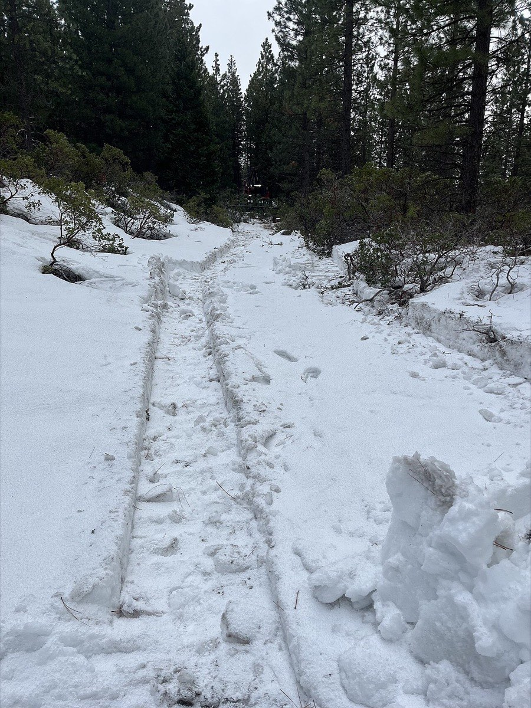
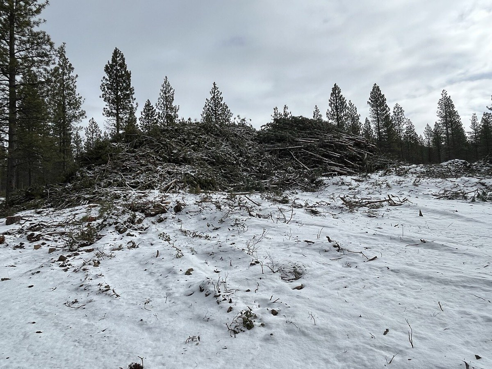
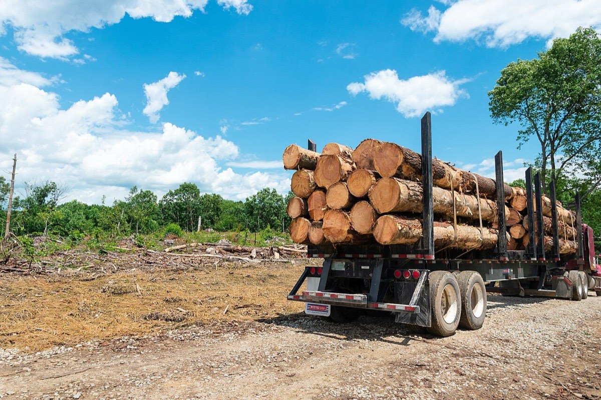

Harvest close-out and follow-up
What happens when the cutting stops: stabilizing the ground, getting the final payments right, and checking that the new forest is coming in.
Pictures
What a harvest leaves on the ground in the weeks after cutting. None of these three is from Vermont or from a northern hardwood stand (two are California pine forest, one is Ohio); a Vermont example is still needed. They show the parts of the job that the close-out list above is about: machine tracks on a skid trail, a landing with slash, and a landing before it is smoothed and seeded.



When it fits
After every harvest. Close-out is spelled out in the contract; follow-up is the owner's.
How it is done
Close-out (Guidelines 2.10; AMP booklet). Finish as soon as ground conditions allow, ideally when soils and trails are dry, and before the logger moves equipment off site (the contract says what is required).
- Smooth ruts so channels do not form and runoff is diverted into vegetated strips.
- Install diversions such as waterbars on trails before leaving permanently; if a trail stays open for recreation, prepare it for that use (broad-based dips may suit better than deep waterbars).
- Sever leaning trees and smooth, seed and mulch the landing.
- Remove temporary water crossings, install waterbars, and seed and mulch the approaches to crossings.
- Lop down, remove from water or pull back slash: slash must be cleared 50 feet from abutting boundaries and public highways and 100 feet from buildings on adjoining property (Legal Checks Before a Harvest).
- On larger parcels, close out finished areas as the work moves on rather than all at the end.
- Check that aesthetic considerations were met (stumps, landings, trail look).
Administration ends when the last contract payment is made, the logger's bond is returned and all conditions, including close-out, are met (Selling Timber and Working With Professionals).
Follow-up for the next forest.
- Regeneration: seedlings are the youngest trees and saplings the next size up (How to Identify Trees gives the size classes and how to tell the seedlings apart). On enrolled land a regeneration treatment that takes stocking below the C-line must establish at least 350 stems per acre of acceptable commercial or native species within ten years; if it does not, the next plan must prescribe work to fix it (UVA Standards 2026 §3.2.3).
- Two risks to regeneration (Guidelines 1.8): non-native invasive plants and over-browsing by deer and moose. Check for invasives before the harvest and remove them; where browsing may cause failure, ask the forester about treatment (White-tailed Deer, Moose, Buckthorns).
- Beech and red maple sprout from stumps, which can crowd out desired species (American Beech, Red Maple).
- Seed sources: where most of the canopy was removed, consider leaving some mature trees as a future seed source in case regeneration fails.
- Erosion devices: the landowner maintains them after the logger leaves (Water Quality and Logging Roads).
- Monitor the site for invasives (disturbed ground invites them), erosion and regeneration over several years.
- Report: for enrolled land, file the annual forest management activity report by February 1 if any forestry activity happened in the previous calendar year (S-VT-003 FMAR); the ten-year plan update brings new inventory data (S-VT-004 Ten-Year Plan Update).
Who does what
The logger completes close-out under the contract; the forester inspects it and works out which trails need repair; the landowner maintains devices, monitors regeneration and files reports.
Timing
Close-out when soils are dry enough; regeneration counted up to ten years on enrolled land; annual report by February 1.
Costs and benefits
Close-out is normally in the logger's price; skipping it risks erosion, water-quality violations and repair costs the bond is meant to cover. Follow-up monitoring costs the owner's time or a forester's fee and protects the investment in the next forest.
Risks and what to avoid
Leaving before close-out is done; releasing the bond early; ignoring a failing regeneration until the plan update.
Rules that apply
AMPs; UVA Standards for regeneration and reporting; T-VT-001 Cutting Contrary to the Plan.
Not recorded here
Seedling stocking counts for non-enrolled land, deer exclosure or fencing practices, and monitoring protocols beyond the plan's regeneration table. Photographs of what a finished Vermont hardwood harvest looks like (stumps, canopy openness, trail and landing condition one to five years later): none found openly licensed; the Voluntary Harvesting Guidelines carry photographs but their reuse terms were not checked.
Sources
- Vermont FPR, Voluntary Harvesting Guidelines (2015), sections 1.8, 2.6, 2.10: https://fpr.vermont.gov/sites/fpr/files/Forest_and_Forestry/Your_Woods/Voluntary_Harvesting_Guidelines/VHG_FINAL.pdf
- UVA Minimum Management and Plan Standards 2026 (§3.2.3)
- Vermont FPR, Acceptable Management Practices for Maintaining Water Quality on Logging Jobs in Vermont (2011)
What this page is based on
Kind of source: mixed (Voluntary Harvesting Guidelines 2015, UVA Standards 2026, FPR economics brochure; all read)
What was read: Voluntary Harvesting Guidelines (2015) sections 1.8, 2.6 to 2.10 and 6.3 to 6.5 in the contents; the UVA Standards 2026 (§3.2.3 regeneration rule, §2.1.1, invasive reporting text, plan elements); the AMP booklet's after-logging sections (not read in detail); the economics brochure. Regeneration thresholds are the 2026 Standards' and are for enrolled land. Chapter 6 of the Guidelines (uncertainty: climate, pests, invasives, monitoring) was not read in full. Pictures (added 2026-10-31): the Wikimedia Commons descriptions of three USDA Forest Service photos were read; the photos themselves were looked at. None is from Vermont or from a northern hardwood stand.
Last checked: 2026-10-31
Vermont land and forest reference, built 2026-11-01. Rules and dates here are summaries, not legal advice; dates shift with elevation and year. Photo and recording credits · Note: _reference/US-VT/Practices/Harvest Close-out and Follow-up.md